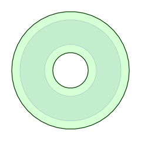
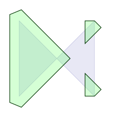
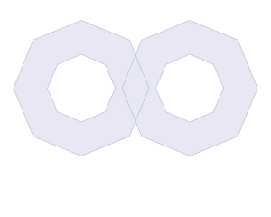
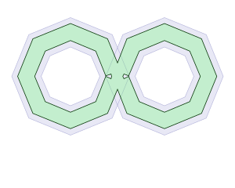
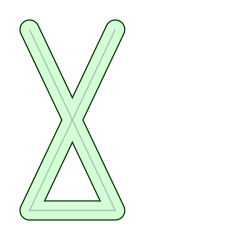
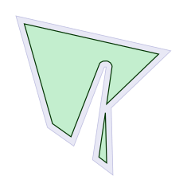

Geometric offsetting refers to the process of creating parallel curves that are offset a specified distance from their primary curves.     
The ClipperOffset class manages the process of offsetting (inflating/deflating) both open and closed paths using a number of different join types and end types. The library user will rarely need to access this unit directly since it will generally be easier to use the InflatePaths function when doing polygon offsetting.
Notes:
EndType.Polygon should be used when offsetting polygons (closed paths).
EndType.Joined should be used with polylines (open paths).
PathsD pp { MakePathD({ 40,40, 360,360, 360,40, 40,360 }) };
PathsD sol = InflatePaths(pp, 40, JoinType::Square, EndType::Polygon);
Intersections must be removed before offsetting, and this can be achieved through a Union clipping operation.
PathsD pp { MakePathD({ 40,40, 360,360, 360,40, 40,360 }) };
pp = Union(pp, FillRule::NonZero);
PathsD sol = InflatePaths(pp, 40, JoinType::Square, EndType::Polygon);
And it's not just self-intersections that must be avoided, offsetting any paths that intersect will very likely produce undesirable results.
PathsD paths = PathsD{ MakePathD({10,10, 100,200, 10,200, 100,10}) };
PathsD sol = InflatePaths(paths, 10, JoinType::Round, EndType::Round);
#include "clipper2/clipper.h"
...
using namespace Clipper2Lib;
int main()
{
Paths64 subject;
subject.push_back(MakePath({ 3480,2570, 3640,1480,
3620,1480, 3260,2410, 2950,2190, 2580,880,
4400,1290, 3700,1960, 3720,2750 }));
Paths64 solution;
ClipperOffset offsetter;
offsetter.AddPaths(subject, JoinType::Round, EndType::Polygon);
offsetter.Execute(-70, solution);
solution = SimplifyPaths(solution, 2.5);
//draw solution ...
DrawPolygons(solution, 0x4000FF00, 0xFF009900);
}

| Methods | Properties |
|---|---|
| AddPath | ArcTolerance |
| AddPaths | MiterLimit |
| Clear | ReverseSolution |
| Constructor | |
| Execute |
InflatePaths, IsPositive, SimplifyPaths, Union, EndType, FillRule
Copyright © 2010-2024 Angus Johnson - Clipper2 1.5.2 - Help file built on 3 Mar 2025